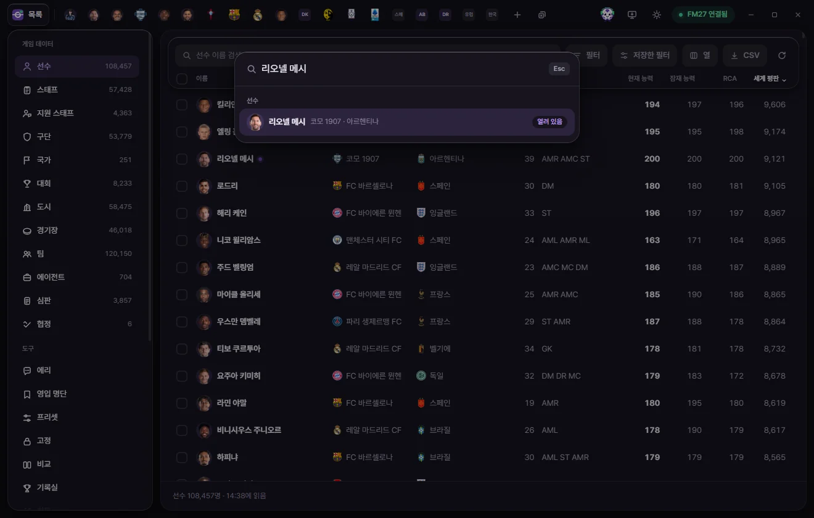
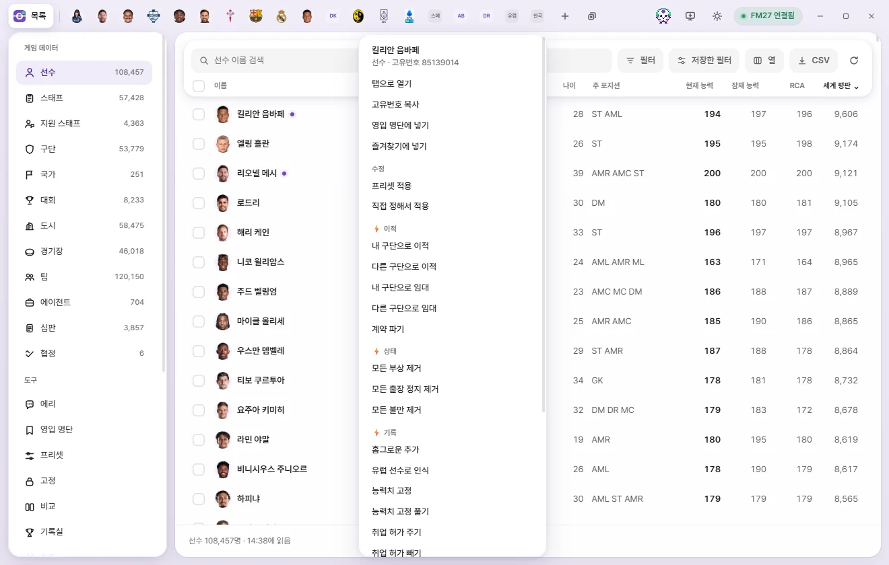

Basics
Tabs, quick open, and right-click menu
How to open, close, and reopen edit tabs, reorder tabs, jump anywhere with Ctrl+K quick open, use every option in the right-click menu, and save bookmarks.
Every time you open an item such as a player or club, FMAX opens a tab for it in the top bar. Just like browser tabs, you can keep several open at once and switch between them. Tabs stay open until you close them, and come right back when you reopen FMAX.
Opening tabs
You can open a tab in any of these ways:
- Click a row in a list, or highlight a row and press Enter.
- Press Ctrl+K or click + in the tab bar for Quick open.
- Click an underlined name (Clicking a name to jump to it).
- Click an item under My manager & club, Bookmarks, or Recent edits in the sidebar.
- Choose Open in a tab from the right-click menu.
- Select multiple rows in a list and click Open in a tab in the bottom bar (up to 20 at once).
- Click the Open viewed screen button (Ctrl+G) in the tab bar to open whichever player, staff member, club, or team you are currently viewing in FM27.
Opening an item that already has a tab switches straight to that tab instead of creating a duplicate. Every time a tab opens, FMAX reads fresh data for that item from the game.
Switching between tabs
- Click any tab to switch to it. Click List on the far left to return to the list screen.
- Ctrl+Tab moves to the next tab and Ctrl+Shift+Tab moves to the previous one. The List screen counts as one stop.
- Ctrl+1 goes to the List screen, Ctrl+2–Ctrl+8 jump to the first through seventh tabs from the left, and Ctrl+9 jumps to the last tab.
- When you have too many tabs to fit across the bar, scroll the mouse wheel over the tab bar to pan sideways.
As you open more tabs, they narrow down; once narrow enough, only the face or club badge is shown without the name. Hover over a tab to see its full name and type, such as 'Lionel Messi · Player'.
A tab with unsaved changes shows a purple dot where the close (×) button normally sits. Hover over it to reveal the × again.
Reordering tabs
Drag a tab left or right to change its order. Dragging only kicks in after moving a few pixels, so a normal click simply switches tabs. Your tab order is remembered when you restart FMAX.
Closing tabs
- Click × on a tab, or middle-click anywhere on the tab.
- Ctrl+W: Closes the current tab. Does nothing on the List screen.
- Close all tabs (appears next to + when two or more tabs are open) or Ctrl+Shift+W: Closes every open tab and returns to List.
When you close several tabs in a row using ×, tab widths stay fixed until your cursor leaves the tab bar so the next × lands right under your pointer.
Reopening closed tabs
Right after you close a tab, a Reopen button briefly appears in the notice. Click it or press Ctrl+Shift+T to bring the last closed tab back in its original spot, on the same subpage, complete with any unsaved edits.
- Press Ctrl+Shift+T repeatedly to bring closed tabs back one by one in reverse order, up to the last 30 closes.
- If you used 'Close all tabs', reopening restores the entire set at once and puts you back on the tab you were viewing.
- A reopened tab reloads its data from the game. If any game values changed in the meantime, your unsaved edits are rechecked against the new values—and if the game already matches what you were going to set, that edit is dropped.
- Closed-tab history is cleared when you quit FMAX.
Quick open (Ctrl+K)


Press Ctrl+K or click + in the tab bar from any screen to bring up a search box in the center of the window.
- Type part of a name, or a unique ID (including regen IDs with
r-). - Matching items appear grouped by type—Player, Staff, Club, and more. Before you type anything, up to 4 items per type are shown; once you type, up to 8 per type appear.
- Use ↑ ↓ and Enter, or click a result to open its tab.
Press Esc, press Ctrl+K again, or click outside the box to close it. Quick open searches by name only (not by club or nationality). You can also find and open languages here, even though they don't have a list screen of their own. Until FMAX has loaded lists from the game, the box displays 'You can search once lists are read from the game'.
Right-clicking a search result opens the right-click menu below.
Right-click menu


Right-click anywhere that points to an item to open its context menu:
- Rows in a list (right-clicking a linked name inside a row, such as a club or nationality, targets that club or nation)
- Underlined names inside edit tabs, and rows in the squad or staff tables on a club tab
- Quick open results, plus My manager & club, Bookmarks, and Recent edits in the sidebar
With a keyboard, focus a list row or linked name and press the Menu key or Shift+F10. Text inputs such as search boxes do not open this menu.
The top of the menu shows the item's name and 'Player · ID 7458500'. If you right-click with multiple rows selected, the header shows '3 selected' and the action applies to all of them.
Single and multiple selection
| Option | What it does | When written to game |
|---|---|---|
| Open in a tab (multiple: Open in 3 tabs) | Opens tabs for the selection, up to 20 at once (dimmed above 20). | — |
| Copy unique ID (multiple: Copy 3 unique IDs) | Copies the unique ID (r-12345 format for regens). Multiple IDs are copied One per line. | — |
| Add to shortlist | Players and staff only. Pick a list or click 'Add to new list'. Anyone already on the list stays as is. Shortlist | Does not write to the game. |
| Remove from this list | Shortlist screen only. Removes the selection from the current list. | Does not write to the game. |
| Add to bookmarks / Remove from bookmarks | Single item only. | Does not write to the game. |
Batch edits
| Option | What it does | When written to game |
|---|---|---|
| Apply preset | Pick a preset and apply it after a confirmation prompt. Presets | Immediately on confirmation. |
| Apply custom edit | Opens the Presets screen as a New preset. Set the edits you want and click 'Apply' to write them to the selection. Save it if you also want to keep it as a preset. Presets | Immediately when you click Apply. |
| Lock values (multiple: Lock values for 3) | Locks the fields chosen on the Locks screen at their current game values. Only shown when you have fields selected on the Locks screen. Locks | Kept locked while FMAX is running. |
⚡ Game editor actions (single item)
Right-clicking a single item groups its ⚡ actions into submenus such as '⚡ Transfers' and '⚡ Status'. Picking one opens that item's tab and runs the action after a confirmation prompt, just like choosing it from the tab's ⚡ menu.
| Type | Groups and actions |
|---|---|
| Player | Transfers (Move to my club, Move to another club, Loan to my club, Loan to another club, Terminate contract), Status (Remove all injuries, Remove all bans, Remove all unhappiness), Records (Add homegrown status, Count as EU player, Freeze attributes, Unfreeze attributes, Grant work permit, Remove work permit), Nationality & birth (Change nationality, Change city of birth), International & service (International retirement, Cancel international retirement, Mark military service done, Mark military service exempt, Clear military service record) |
| Staff | Transfers (Move to my club, Move to another club, Terminate contract), National team (Add to national team, Terminate national team contract), Personal (Change nationality, Change city of birth, Change to female, Change to male) |
| Team | All players (Remove all player injuries, Remove all player bans, Remove all player unhappiness, Change team morale), Team (Improve team cohesion, Max tactical familiarity) |
| Club | Club (Use licensed kits, Don’t use licensed kits), Objectives (Remove board objective, Remove supporter objective) |
| My manager | Manager (Become Unsackable on/off, Terminate contract, Terminate national team contract, Move to another club, Move to another national team), Search (Show all players in search, Stop showing all players in search, Show all staff in search, Stop showing all staff in search) |
- 'Move to my club' and 'Loan to my club' only appear when FMAX knows which club you manage.
- 'Cancel future transfer' and 'Change retirement date' aren't in the right-click menu—FMAX has to check the game first to see if one is scheduled, so they only appear in the tab's ⚡ menu.
- For international retirement, military service, and gender actions, if there is nothing to change, FMAX lets you know when you run it that it is already set that way.
See Game editor (⚡) for details on what each action does.
⚡ Quick actions (multiple items)
When you select multiple people and right-click, actions that don't need individual setup appear under '⚡ Quick actions'. Actions like transfers that require per-person choices are left out.
| Type | Actions |
|---|---|
| Player | Remove all injuries, Remove all bans, Remove all unhappiness, Freeze attributes, Unfreeze attributes, Grant work permit, Remove work permit, International retirement, Cancel international retirement, Mark military service done, Mark military service exempt, Clear military service record |
| Staff | Change to female, Change to male |
Picking one brings up a confirmation prompt and runs it on each selected person in turn, like a single-action preset. The first time you use one, FMAX asks once whether you have backed up your save.
⚡ All club players (clubs)
Right-clicking a club shows '⚡ All club players' (or '⚡ All players at 3 clubs' when multiple clubs are selected).
| Option | What it does |
|---|---|
| Remove all player injuries | Every player at the club is healed and set to 100% Condition and Match sharpness. |
| Remove all player bans | Clears bans for every player at the club. |
| Remove all player unhappiness | Clears unhappiness for every player at the club. |
FMAX must be connected to the game. It finds the club's players, asks you to confirm, and runs the action on each player one by one.
Clear selection
At the bottom of any multi-select right-click menu, Clear selection deselects everything.
Selecting multiple people in tables
The squad and staff tables inside a club tab also have checkboxes along the left of each row. Click to select, or hold Shift and click to select a range, just like in a list. The header checkbox selects or clears that whole table. Ctrl+A selects every row across the tables on that page, and Esc clears the selection.
With rows selected, a '3 selected' bar appears at the bottom of the tab.
| Button | What it does |
|---|---|
| Add to shortlist | Adds the selected people to a shortlist. |
| Apply preset | Applies a preset to the selected people right away. |
| Open in a tab | Opens tabs for the selected people (when 20 or fewer are selected). |
| Clear selection | Clears the selection. |
Right-click any selected row for the full set of options (see the right-click menu above). Your selection is kept only while that tab stays open.
Clicking a name to jump to it
Across FMAX, names of related items are clickable links—for example, a player's club or nationality in a list, Club or nationality in an edit tab header, or City of birth and stadium on the info page. These names have a subtle underline (appearing on hover inside list cells) and show a tooltip like 'Open club tab' when you point at them. Click the name—or focus it and press Enter—to open its tab.
In tables where each row represents a person, such as the squad and staff tables on a club tab, clicking a row opens that person's tab.
Bookmarks
Keep items you open often handy under 'Bookmarks' in the sidebar.
- Adding & removing: Click the star button on the right of an edit tab's header, or use 'Add to bookmarks' / 'Remove from bookmarks' in the right-click menu.
- Opening: Click a name under Bookmarks in the sidebar.
- Removing from the sidebar: Click × on the right side of the row.
- Bookmarked items also show a star next to their name in lists.
Bookmarks are never written to the game. FMAX stores them separately per save, because a regen in one save is a completely different person in another (What FMAX remembers per save).
When you reopen FMAX
Your open tabs, their order, the subpage you were viewing in each tab, and your last active tab and sidebar view all come back just as you left them when you restart FMAX. Tab values are read fresh from the game when FMAX starts up.